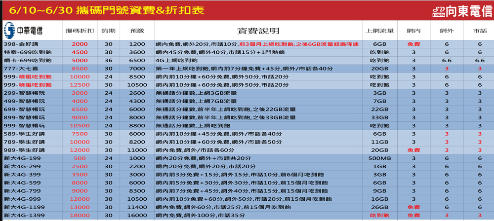

了解自己的需求與預算
外觀 品牌
相機 價格
效能 NFC行動支付
防水 充電口
ROM容量 載波聚合
快速充電 耳機孔
購買手機的方式
目前大多數人購買手機都是等到續約時到各大通訊直營店直接搭配門號後買的吧，而其實到電信直營店續約是最虧的，直營店的方案手機補貼相對少，同時手機價格也不會隨著市場波動而改變，而也能選擇的手機也相對少，哪到底該到哪裡購機才是最划算的呢?
其實可以在一些民間通訊行做續約的動作，我也不是建議大家到來路不明的通訊還做申辦拉，所以我推薦一個網站比價王，如要購買手機要前往通訊行可以在上面預約時間也可做價錢比較就不太怕遇到敲詐的了，我再和各位推薦幾家網路上較為推薦的通訊行 北部我推向東通訊、地標網通 南部我推薦米可通訊(台南高雄) 中部二呆通訊(台中)，但如怕麻煩可使用比價王的搜尋尋找家裡附近的店家和價錢比較就ok了，不過缺點是目前東部這些都無法使用，所以東部人只能自己尋找通訊行或信任的店家了。
續約? NP?
之前大家在直營店都是選擇續約吧，但其實續約給的補助和方案都是最差的，我都戲稱為肥羊，而精打細算的人通常受選擇NP，NP的意思其實就是跳槽，從原本的電信跳網另一家電信，這種方式的補助都會多很多方案也比較多能選，所以我都會推薦大家約到了就NP這樣才不會當肥羊。

可以看到上面的通訊行價目表
表格內的意思
- 攜碼折扣的意思就是NP(跳槽)給你的購機金
- 約期通常以月來算
- 預繳的意思是通訊行會怕你跑票，而會收預繳金預繳金會用來當作你前幾個月的帳單付掉
- 如你不需要換手機有的通訊行能直接將攜碼折扣給你現金
- 要找有保障的通訊行
常見的幾個高預算手機品牌
推薦的手機系列
- HTC 除了今年旗艦機(U12可等跳水)和去年旗艦機(U11 U11+)以外都別買，尤其是中低階(DESIRE系列)
- SAMSUNG 同上(只有S系列和NOTE系列等旗艦推薦)中低階都不推
- SONY 這我也是只推旗艦(等跳水後才推)，不過他的中低階沒有上面兩個不堪，可是價位太高也得等跳水
- HUAWEL 這品牌比較少見，旗艦比較偏拍照效能相較於其他旗艦偏弱，中低階普通也不是很推 主要推旗艦的P系列和MATE系列
- APPLE 這就不用說了，但有個重點iphoon6不要再買了效能太差又太貴同樣預算推安卓，而6s或以上還行
常見的幾個CP值手機品牌
- OPPO 其實這牌子沒啥CP還蠻坑的效能都低別人一階但價格貴，主打的拍照其實也不怎麼樣強再修圖而已
- SHARP 這也算少見，不過東西還算可以，不過開價會偏高可以等跳水 推中階
- ASUS CP值很高但主要推中高階機 也不推低階(5000以下)，ZF4(660 630 835)、5和5Z還有ARCE(重效能不重續航) 都還算推最近還會有ZFONE MAX ME PRO 我上面列的以外的機型都沒有很推
- 小米 這家的CP值也是很高，預算低於5000只推這家，他的旗艦系列也還不錯開價就很低不用等跳水﹑除了最新的MAX2S以外其他的拍照和都不是太優 不過處理器相對好 如果中階和旗艦我會推樓上的ASUS
- NOKIA 這個牌子我也推中階低於5000以下的機型就不用了，拍照也不是很好，但整體做工設計也還不錯
售後服務與維修
我想除了CP值和體驗以外維修是最重要的 品牌維修分析
- HTC 之前的聯強維修有很多人修過後就在抱怨沒進水卻被判受潮 我想售後服務得加強
- SAMSUNG和APPLE的售後都算不錯 ASUS我之前修過 據點多方便
- SONY的售後服務風評也不是很好
- 其他家的售後也都還行只是據點偏少(不推OPPO但 他的售後好像還行)
購買手機重點
買手機可別只看品牌，重點是需求和偏好，有些需要注意的重點我列在下面
像是主打防水拉，但其實防水手機進水後為維修都沒有保固的，所以說我認為防水只能算買個保險，還有像是需要邊聽音樂邊充電的一定要注意有沒有耳機孔，現在有許多手機都沒有耳機孔了，再來是容量還有是否支援記憶卡，有空的時候可以清除一些快取 或 重開機 來讓手機加速如果還是很卡可以考慮雙清(就是清除資料)如果都無法的話就是硬體不行了，然後NFC行動支付越來越方便購買的時候也可注意自己是否會用到，還有載波聚合，載波聚合的重點再看手機能收到的訊號是否能收到電信業者的訊號(像是小米2018年以前的手機都沒有700頻段台灣大哥大和亞太的訊號會比較不好)還有2AC 3AC等(就是能否收到更快速都網路但還是要看電信是否有支援)，螢幕材質也是個重點像是LCD或AMOLED等可參考此篇還有指紋臉部等解鎖方式。
支援協助
如果對手機有問題或對NP之類的有問題都可以直接問我
我的推薦手機
我個人是比較喜歡有CP值的手機
| # | 10000~20000 | 5000~10000 | 5000以下 |
|---|---|---|---|
| 1 | ZF5Z | ZF4(S660) | 紅米5 |
| 2 | HTCU11 | 紅米NOTE5 | 紅米NOTE4X |
| 3 | SONY XZ1 | HTC Uultra | 從缺 |